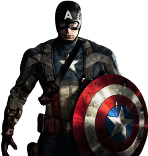

The Avengers are Earth's mightiest heroes, formed to fight the foes no single hero could withstand. They are the most prestigious and powerful super-hero team in the world, an ever shifting assemblage of super-beings, adventurers and crime fighters devoted to protecting the planet from menaces beyond the scope of conventional authorities. The group began with 3 of the most known characters –Thor (Thor Odinson), Hulk (Bruce Banner) and Iron Man (Tony Stark); along with two other characters –Ant Man (Hank Pym) and Wasp, whom don’t appear in the movies, however they do appear in the comics.
They joined forces to thwart the Asgardian menace Loki in response to a call for help from Hulk's teen sidekick, Rick Jones. The comics and the movies are different in how the Avengers were formed. In the comics, Ant Man suggested the heroes remain together as a team, and his partner Wasp suggested they call themselves "something colorful and dramatic, like ...the Avengers." The name stuck, and a legend was born. In the movies, Nick Fury and Iron Man were the ones who engaged in making the Avengers come to life.
Iron Man provided the group with financing and high-tech equipment in his dual identity as rich industrialist Tony Stark, donating his Manhattan residence to serve as their headquarters, Avengers Mansion. Stark is the leader and one of the cofounding members of the Avengers according to the comics. Moving along with the Avengers as seen in the comics; after a serious of complications and irritations, the Hulk soon quit the team in a fit of rage. Despite the loss of the Hulk on the team, The Avengers went on to recruit the long-lost war hero Captain America (Steve Rogers). Once Rogers joined the team, they became the most respected super hero team of its generation as well as winning it’s A-1 security status.
Captain America was a newly recruit, unlike the rest. The remaining founders of the Avengers soon retired from active duty, leaving Rogers to deal with the rest of the new recruits and in building the team up again. A few of these recruits were – Hawkeye (Clint Barton) and the twin siblings Quicksilver (Pietro Maximoff) and Scarlet Witch (Wanda Maximoff). The training proved successful and made the founders proud. All four of them went on to long service records with the Avengers. Hawkeye in particular became a valued mainstay of the team second only to his mentor, Captain proved successful and made the founders proud. All four of them went on to long service records with the Avengers. Hawkeye in particular became a valued mainstay of the team second only to his mentor, Captain on to long service records with the Avengers.
However in the movies, the entire team was recruited to battle evil. Iron Man, Black Widow (whom is not mentioned in the previous paragraphs due to the fact she hadn’t appeared yet in the comics), Hawkeye, Captain America, the Hulk, and Thor were all brought together in the first Avengers movie and then carried on into the 2nd movie. They were what made the original Avengers unlike in the comics. Since only the two movies were published on screen, none of the characters had died off, except for Quicksilver in the 2nd movie. Scarlet Witch moved on to joining the team along with Falcon. In the comics, the original Avengers were destroyed by a threat from within, when an insane Scarlet Witch turned against the team. Hawkeye, Vision, Jack of Hearts and Ant-Man (Lang) were all apparently slain and the Avengers Mansion was destroyed. Stark's fortune was too depleted to rebuild it and the remaining members disbanded; however, this was not the end.
Months later, after teaming with Iron Man, Spider-Man, Luke Cage, Spider-Woman (Drew), Daredevil and Sentry to contain a mass breakout at the super-criminal prison known as the Raft, Captain America invited his six allies to join him in rebuilding the Avengers. Most of them accepted, though Daredevil declined and the unstable Sentry had gone into seclusion. Leading intelligence agency S.H.I.E.L.D. was reluctant to sanction a new Avengers team, but Captain America reminded them of his status with the government, giving him the authority to assemble any team he requires for any given mission, so he required no approval from the authorities to reassemble the Avengers.
Iron Man offered the top floors of his new Stark Tower skyscraper to serve as the team's high-tech headquarters (staffed by ever-faithful Jarvis), and the group resolved continue fighting off menaces beyond the scope of conventional authorities. The new Avengers never stayed as the same individuals in the group. Many of them disbanded and many were recruited. Some even joined forces to fight off menaces. But that’s a story waiting to be written for another time.